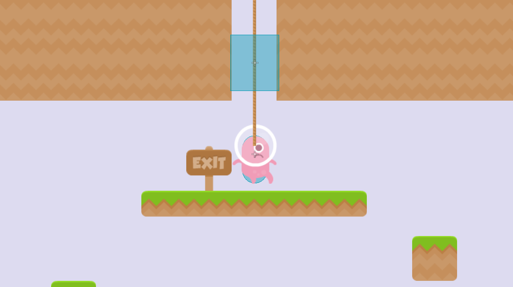
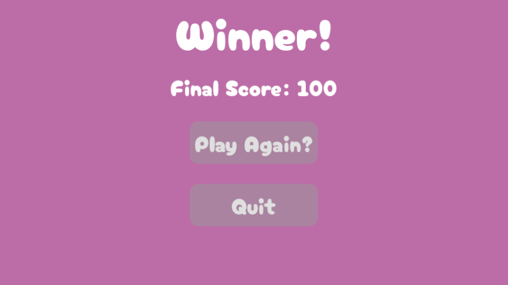
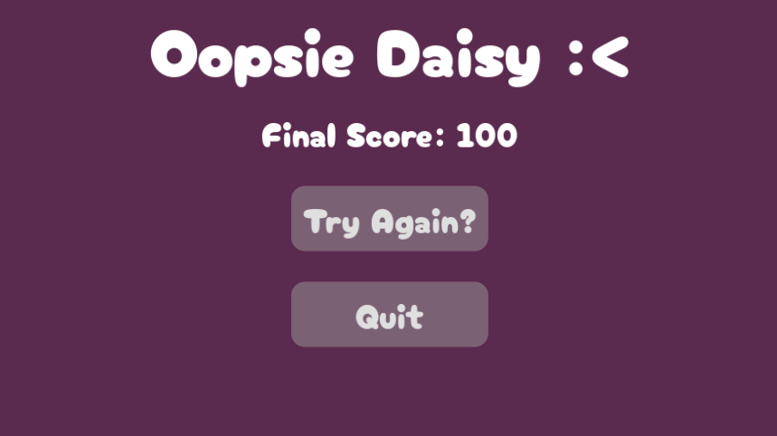

Section 7 of 7
Take Test →

Section 7: Level Transitions & Game Flow
Create a complete game loop with level transitions, win conditions, and game over states.
Section Progress: 0%
1
Creating a Reusable Exit
The Exit scene will be placed at the end of each level. When the player touches it, the game loads the next level.
- Press Ctrl + N to create a new scene
- Add an Area2D as the root node
- Rename it to "Exit"
- Add a CollisionShape2D child
- Set the shape to RectangleShape2D covering the exit area
- Do not add a Sprite2D - this exit is invisible
- Save the scene as "exit.tscn"
💡 Pro Tip: Making the exit invisible allows you to place it anywhere without visual clutter. The player triggers it by walking through the area.
2
Exit Script
This script detects when the player touches the exit and triggers the next level.
extends Area2D
func _ready():
body_entered.connect(_on_body_entered)
func _on_body_entered(body):
if body.name == "Player":
# Find the Game node
var game = get_tree().current_scene
if game and game.has_method("load_next_level"):
game.load_next_level()
queue_free() # Remove the exit after use
💡 New Concept:
queue_free() removes the exit node after it's triggered, preventing multiple activations.

Figure 7.2: Placing the exit in the level
3
Game Level Management
Add these functions to your Game.gd script to handle level progression.
# Add to Game.gd
func load_next_level():
var next_level = current_level + 1
load_level(next_level)
func load_level(level_number):
current_level = level_number
if current_level_node:
current_level_node.queue_free()
var level_path = "res://Scenes/Levels/Level" + str(level_number) + ".tscn"
if ResourceLoader.exists(level_path):
var level_scene = load(level_path)
current_level_node = level_scene.instantiate()
add_child(current_level_node)
print("Loaded: " + level_path)
else:
# No more levels - win the game!
win_game()
func win_game():
if current_level_node:
current_level_node.queue_free()
var level_path = "res://Scenes/Levels/Win.tscn"
if ResourceLoader.exists(level_path):
var level_scene = load(level_path)
current_level_node = level_scene.instantiate()
add_child(current_level_node)
print("Win Screen")
⚠️ Important: The game checks if the next level file exists. If not, it triggers the win screen.
4
Creating the Win Screen
- Create a new scene with Control as the root node
- Add a Label with text "You Win!"
- Add another Label for displaying final score
- Add a Button with text "Play Again"
- Add a Button with text "Quit"
- Save as "Win.tscn"
Win Scene Script
extends Control
@onready var score_label = $ScoreLabel
@onready var play_again_button = $PlayAgainButton
@onready var quit_button = $QuitButton
func _ready():
# Get final score from Game
var game = get_tree().current_scene
if game and game.has_method("get_score"):
score_label.text = "Final Score: " + str(game.get_score())
func _on_play_again_pressed():
var game = get_tree().current_scene
if game and game.has_method("reset_game"):
game.reset_game()
func _on_quit_button_pressed():
get_tree().quit()
💡 Pro Tip: The Win scene displays the player's final score and offers options to continue playing or return to the main menu.

Figure 7.4: Creating the Win scene with final score display
5
Creating the Game Over Screen
- This is as simple as duplicating the Win scene
- Change the text to "Game Over" or something similar
- Keep the final score label to show how well the player did
- Keep the "Play Again" and "Quit" buttons, you can change the text for flavor if you want

Figure 7.5: Creating the Game Over scene with restart options
6
Placing Exits in Your Levels
- Open Level1.tscn
- Drag exit.tscn from the FileSystem into the level
- Position it at the end of the level
- Save the level
Creating Level2.tscn
- Create a new scene with Node2D as the root
- Name it "Level"
- Add TileMapLayer nodes for Ground and Platforms
- Paint a new, more challenging level
- Place the player, enemies, coins, and an exit
- Save as "Level2.tscn"
💡 Pro Tip: Make Level2 more challenging than Level1 with harder jumps, more enemies, or tricky platform placements.
7
Testing Your Full Game
- Open Game.tscn
- Press F5 to run the game
- Play through Level1
- Reach the exit to trigger Level2
- Complete Level2 to reach the Win screen
- Test what happens when you lose all health
Complete Game Flow
- Start.tscn → Player clicks "Play"
- Game.tscn → Loads Level1
- Level1 → Player reaches exit → Loads Level2
- Level2 → Player reaches exit → Loads Win.tscn
- Win.tscn → Player clicks "Play Again" → Restarts Game.tscn
- Game Over → Player clicks "Try Again" → Restarts current level
🎉 Congratulations! You've built a complete platformer with multiple levels, enemies, collectibles, health, score, and a full game loop!